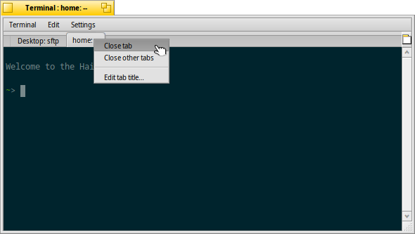

日本語
日本語 Français
Français Deutsch
Deutsch Italiano
Italiano Русский
Русский Español
Español Svenska
Svenska Українська
Українська 中文 ［中文］
中文 ［中文］ Português
Português Suomi
Suomi Slovenčina
Slovenčina English
English ターミナル (Terminal)
ターミナル (Terminal)
| Deskbar メニュー: | ||
| 場所: | /boot/system/apps/ターミナル | |
| 設定ファイル: | ~/config/settings/ターミナル ~/.profile - /boot/common/etc/profile のデフォルトに追加 / 上書き ~/.inputrc - /boot/common/etc/inputrc のデフォルトに追加 / 上書き |
ターミナルは、Haiku の Bash (Bourne Again Shell) へのインターフェースです。
シェルを使うオンラインチュートリアルへのリンクは、スクリプト と Haiku のコマンドラインアプリケーションにあります。ここではターミナルアプリケーション自体に集中します。
 ウィンドウとタブ
ウィンドウとタブ
ターミナルは必要ならばいくつでも開くことができます。すでに実行中のターミナルから、ALT N で新しいウィンドウを開くか、ALT T でタブを開けます。
タブの空白部分をダブルクリックすると新しいタブが開かれ、タブをダブルクリックするとタイトルを編集するダイアログが開かれます。％ で指定された変数はいくつかあり、テキストフィールドの上にマウスを移動させると説明がツールチップで表示されます。
標準 (%1d: %p) では、タブはカレントディレクトリを表示し、: で区切った後、現在実行中のプロセス(bash が実行中かアイドル中の場合は --) を表示します。上のスクリーンショットでは、Desktop フォルダー内の FTP セッションを最初のタブで実行しており、二つ目のタブは、home でアイドルしています。
でターミナルのウィンドウタイトルも同様に編集できます。
タブを右クリックすると か、ダブルクリックのように、 をするコンテキストメニューが表示されます。
ターミナルのウィンドウはほかのウィンドウのようにサイズを変更するか、 メニューでプリセットされたサイズを使うことができます。 ALT ENTER で全画面表示に切り替えます。
変更されたウィンドウサイズと文字エンコーディングは、 を選択しなければ保存されません。
設定
ではターミナルの標準設定を変更できます。

タブやウィンドウのタイトルの名前を付ける ”式” から始まります。ふたたび、ツールチップは利用可能な変数を表示します。その下ではフォントタイプ、フォントサイズやテキストの背景色を設定できます。 のようなプリセット配色を選択するか、下にあるカラー選択を使って 配色を作成できます。
チェックボックスをオンにすると ことができ、プログラムが実行中にターミナルを終了しようとすると警告が出ます。
設定をファイルに保存でき、ファイルをダブルクリックすると設定されたターミナルが開きます。
をクリックすると現在の設定をデフォルトとして保存します。
キーボードショートカット
ショートカットとキーの組み合わせに、便利なショートカットの一覧が載っています。
Bash カスタマイズ
bash は Unix 由来なので、カスタマイズする方法は数え切れないほどあります。ユーザーにとって重要なファイルは、.profile と .inputrc の 2 つです。
ファイルは両方とも home/ 内に作成することができ、/boot/common/etc/ で設定されたシステムデフォルトを上書きできます。
.profile
.profile は新しいターミナルを開くたびにロードされます。bash の動作に影響するさまざまなエイリアスや変数を設定します。これについてのヘルプはオンラインで見つけられるでしょう。
The Haiku/BeOS Tip Server からいろいろなヘルプを見られます。たとえば、
より多くのヘルプは、こちらへ。
.inputrc
.inputrc はキーバインドに対して働きます。Haiku は便利なデフォルトを提供するので、読者が詳細設定を変更する必要はないでしょう。特別なキーバインドが必要になった場合は、The GNU Readline Library などのオンラインリソースを見てください。
ターミナルで作業するためのヒント
ファイルやフォルダーを Tracker ウィンドウからターミナルにドラッグすると、カーソルの場所にファイルやフォルダーの場所を挿入します。右クリックでドラッグすると、次のようなアクションがコンテキストメニューに表示されます。
左クリックと同様、ファイルの場所を挿入します。 ドラッグされたファイルのフォルダーへディレクトリを変更します。 現在ターミナルで作業中のディレクトリにドラッグされたファイルのリンクを作成します。 ドラッグされたファイルをカレントディレクトリへ移動させます。 ドラッグされたファイルをカレントディレクトリにコピーします。 open [filename] コマンドでどのファイルも標準アプリケーションで開くことができます。 これは現在 (".") と親 ("..") フォルダーの表現でも可能で、Tracker ウィンドウで開かれます。 現在作業しているディレクトリを開くには、
open .
と入力してください。